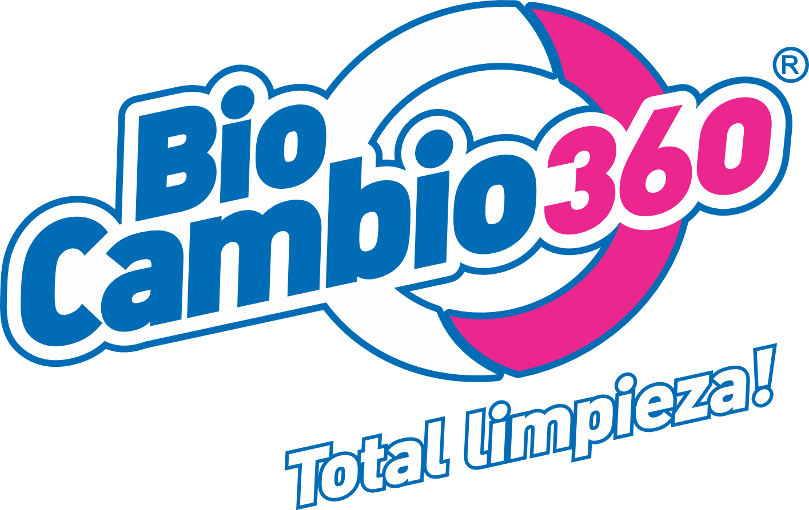

Material de capacitación para coordinación comercial y de logística: el viaje completo del cliente, paso a paso, desde que llega como lead hasta que se fideliza. Pasa el mouse sobre cada tarjeta para una vista rápida, o haz clic para ver el detalle completo.

Ciclo completo del cliente: del primer contacto a la fidelización
No encontramos nada con ese término. Prueba con otra palabra.